Algebraic Multigrid
Here we outline the basic principles behind the Algebraic Multigrid (AMG) method [BrMH85], [Stue99]. Consider a system of linear algebraic equations in the form
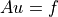
where  is an
is an  matrix. Multigrid methods are based on
the recursive use of two-grid scheme, which combines
matrix. Multigrid methods are based on
the recursive use of two-grid scheme, which combines
Relaxation, or smoothing iteration: a simple iterative method such as Jacobi or Gauss-Seidel; and
Coarse grid correction: solving residual equation on a coarser grid. Transfer between grids is described with transfer operators
 (prolongation or interpolation) and
(prolongation or interpolation) and  (restriction).
(restriction).
A setup phase of a generic algebraic multigrid (AMG) algorithm may be described as follows:
Start with a system matrix 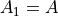.
- While the matrix 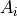 is too big to be solved directly:
Introduce prolongation operator
 , and restriction operator
, and restriction operator
 .
.Construct coarse system using Galerkin operator: 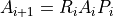.
Construct a direct solver for the coarsest system 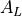.
Note that in order to construct the next level in the AMG hierarchy, we only
need to define transfer operators and . Also, the
restriction operator is often chosen to be a transpose of the prolongation
operator: 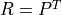.
Having constructed the AMG hierarchy, we can use it to solve the system as follows:
Start at the finest level with initial approximation 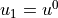.
- Iterate until convergence (V-cycle):
- At each level of the grid hiearchy, finest-to-coarsest:
Apply a couple of smoothing iterations (pre-relaxation) to the current solution 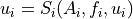.
Find residual 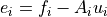 and restrict it to the RHS on the coarser level: 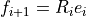.
Solve the corasest system directly: 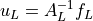.
- At each level of the grid hiearchy, coarsest-to-finest:
Update the current solution with the interpolated solution from the coarser level: 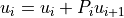.
Apply a couple of smoothing iterations (post-relaxation) to the updated solution: .
More often AMG is not used standalone, but as a preconditioner with an iterative Krylov subspace method. In this case single V-cycle is used as a preconditioning step.
So, in order to fully define an AMG method, we need to choose transfer
operators and , and smoother  .
.